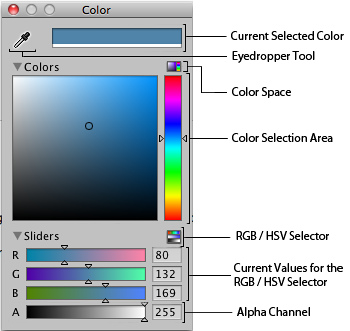
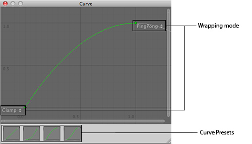
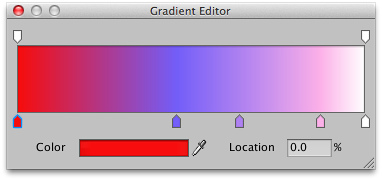

Editing Value Properties
Value properties do not reference anything and they can be edited right on the spot. Typical value properties are numbers, toggles, strings, and selection popups, but they can also be colors, vectors, curves, and other types.

Value properties on the inspector can be numbers, checkboxes, strings...
Many value properties have a text field and can be adjusted simply by clicking on them, entering a value using the keyboard, and pressing to save the value.
- You can also put your mouse next to a numeric property, left-click and drag it to scroll values quickly
- Some numeric properties also have a slider that can be used to visually tweak the value.
Some Value Properties open up a small popup dialog that can be used to edit the value.
Color Picker
Properties of the Color type will open up the Color Picker. (On Mac OS X this color picker can be changed to the native OS color picker by enabling under .)
The Color Picker reference in the inspector is represented by:

Color Picker reference in the inspector.
And opens the Color Picker just by clicking on it:

Color Picker descriptions.
Color Picker descriptions.
Use the Eyedropper Tool when you want to find a value just by putting your mouse over the color you want to grab.
RGB / HSV Selector lets you switch your values from Red, Green, Blue to Hue, Saturation and Value (Strength) of your color.
Finally, the transparency of the Color selected can be controlled by the Alpha Channel value.
Curve Editor
Properties of the AnimationCurve type will open up the Curve Editor. The Curve Editor lets you edit a curve or choose from one of the presets. For more information on editing curves, see the guide on Editing Curves.
The type is called AnimationCurve for legacy reasons, but it can be used to define any custom curve function. The function can then be evaluated at runtime from a script.
An AnimationCurve property is shown in the inspector as a small preview:
A preview of an AnimationCurve in the Inspector.
Clicking on it opens the Curve Editor:

The Curve Editor is for editing AnimationCurves.
The Curve Editor is for editing AnimationCurves.
Wrapping Mode Lets you select between Ping Pong, Clamp and Loop for the Control Keys in your curve.
The Presets lets you modify your curve to default outlines the curves can have.
Gradient editor
In graphics and animation, it is often useful to be able to blend one colour gradually into another, over space or time. A gradient is a visual representation of a colour progression, which simply shows the main colours (which are called stops) and all the intermediate shades between them. In Unity, gradients have their own special value editor, shown below.

The upward-pointing arrows along the bottom of the gradient bar denote the stops. You can select a stop by clicking on it; its value will be shown in the Color box which will open the standard colour picker when clicked. A new stop can be created by clicking just underneath the gradient bar. The position of any of the stops can be changed simply by clicking and dragging and a stop can be removed with .
The downward-pointing arrows above the gradient bar are also stops but they correspond to the alpha (transparency) of the gradient at that point. By default, there are two stops set to 100% alpha (ie, fully opaque) but any number of stops can be added and edited in much the same way as the colour stops.
Page last updated: 2012-08-13